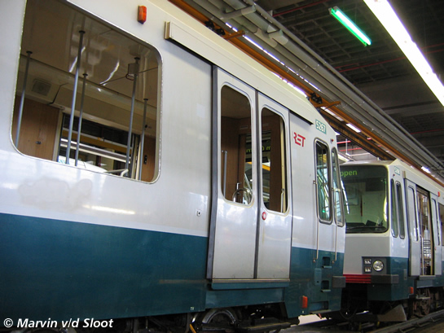

Rijtuigen 5405 en 5410 verliezen pantograaf en overig nieuws...
- donderdag 04 december 2008 22:01
- Geschreven door Joachim
Vanmiddag omstreeks 17.20 uur kwamen twee metrosneltramrijtuigen (5405-5410) met de pantografen in aanraking met de loopbrug van emplacement 's-Gravenweg. De combinatie, welke dienst deed als wagendienst 564, vertrok zonder passagiers vanaf station Capelsebrug spoor 1 in verband met een defect. Op onbekende wijze zijn de pantografen niet correct vergrendeld geweest, waardoor deze tijdens of voor de rit richting station Kralingse Zoom omhoog gingen. Normaal behoren de pantografen vanaf station Capelsebrug richting West naar beneden en vergrendeld te zijn, omdat de metrosneltram hier gebruikt maakt van de derde rail.
De pantografen van beide rijtuigen raakten zwaar beschadigd en zijn ter plaatse deels gedemonteerd. Er werd tijdelijk enkelspoorbedrijf gereden via spoor 2 tussen de wisselcomplexen Kralingse Zoom II en Capelsebrug II, via spoor 2. Metrotreinen van en naar Capelle a/d IJssel reden enkelspoorbedrijf tussen de wisselcomplexen Slotlaan en Kralingse Zoom II. Met behulp van locomotief 6102 werd de combinatie uiteindelijk om 18.15 uur weggesleept naar spoor 360 van emplacement 's-Gravenweg. Om 18.30 uur kon er weer gebruik gemaakt worden van alle sporen tussen de stations Kralingse Zoom, Capelsebrug en Slotlaan. De vertragingen waren aanzienlijk, de toedracht van het incident wordt onderzocht.
Geprobeerd wordt de pantograaf van rijtuig 5410 te demonteren.
De locomotief heeft de gehele combinatie uiteindelijk weggesleept.
Locomtief 6102, daarachter rijtuig 5405 en rijtuig 5410.
De pantograaf van rijtuig 5405 werd gedemonteerd en zwaar gehavend achter gelaten langs het spoor.
RandstadRail
Zoals wij in het nieuwsitem van gisteren gemeld hebben, worden er op dit moment naast technische aanpassingen ook cosmetische aanpassingen gedaan aan elf rijtuigen van het Type T (5261-5271), die vanaf september 2006 dienst gaan doen op het RandstadRailtracé. De aanpassingen vinden allen plaats in de lijnwerkplaats Waalhaven. Naast een verandering van de kleurstelling, worden de rijtuigen waar nodig bijgelakt en voorzien van nieuwe ruiten. Hieronder enkele foto's van deze werkzaamheden.
Foto's met dank aan  OV-Digitaal
OV-Digitaal
Rijtuig 5267, zonder metrologo op de voorzijde. De ruiten zijn inmiddels uit het rijtuig gehaald.

Ook de rode bies is verwijderd.
Sommige rijtuigen werden ontdaan van de zittingen van de bankjes. Deze worden allemaal voorzien van een nieuwe kleur: rood.
Ook vinden lakwerkzaamheden plaats. Delen van het rijtuig worden afgeplakt en waar nodig wordt bijgelakt.
Rijtuig 5264 is ook nog steeds aanwezig en is deels getooid in de nieuwe RandstadRail-kleuren.
Andere delen van het rijtuig moeten nog cosmetisch aangepast worden.
De gele vlakken op de kop van rijtuig 5264 zijn verleden tijd, evenals het metrologo en de rode bumper.

Rijtuig 5267 (links) en rijtuig 5265 (rechts). Het laatst genoemde rijtuig dient nog gereed gemaakt te worden voor aanpassing van de kleurstelling.